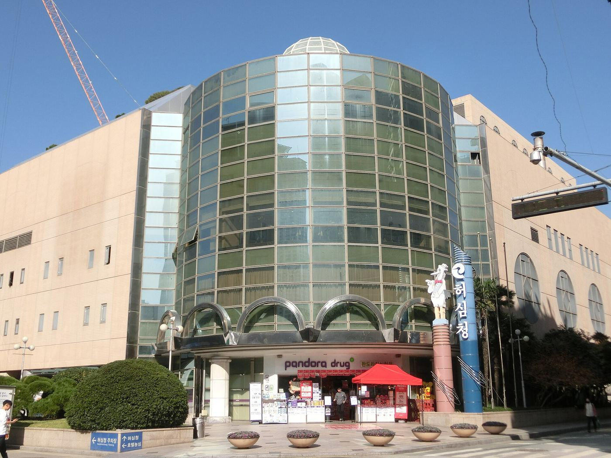

온천장역 · Oncheonjang Station
歴史ある名湯と豊かな自然に癒やされる街
伝統の温泉ホテル、ローカルグルメ、金井山の自然を満喫する釜山癒やしのエリア
호텔 농심 (Hotel Nongshim)
温泉場駅近くを代表する温泉ホテル。客室内に温泉水の浴槽設備を備えているのが特徴。 parkingや朝食などの利便施設が整っており、 familyやカップルに人気。
📍 釜山広域市 東莱区 金剛公園路20番길 23 (温泉洞 137-7)
녹천 온천 호텔 (Nokcheon Hotel)
温泉場駅から徒歩圏内。温泉浴場と客室を一緒に利用できる伝統スタイルの温泉ホテルで、コスパの良い宿泊施設としてよく挙げられます。
📍 釜山広域市 東莱区 金剛公園路26番길 31 (温泉洞 96-6)
대성관 온천 호텔 (Daesungkwan Hotel)
温泉場の中心街に位置する歴史ある温泉旅館スタイルの宿泊施設。温泉風呂の利用が便利で、リーズナブルな meが魅力です。
📍 釜山広域市 東莱区 金剛路124番길 19
깃발집 (伝統海鮮料理店)
温泉場駅5番出口から虚心庁方面へ歩くと見える伝統海鮮グルメ店。ムルガイ（カレイ）の水刺身やワタリガニの味噌煮込み・カンジャンケジャンなど、豊富な海鮮料理を楽しめます。
📍 釜山 東莱区 温泉洞 154-68 (温泉場路107番길 一帯)
동운반점 (50年伝統の老舗中華)
50年の伝統を誇る中華料理の老舗。チャンポン、ジャージャー麺、酢豚など基本の中華メニューが安定した美味しさで、地元客が長年通う常連店です。
📍 釜山 東莱区 温泉洞 153-12
대길숯불갈비 (돼지갈비 숯불구이)
豚味付けカルビ、생カルビ、サムギョプサルなどの炭火焼き専門店。ご飯とテンジャンチゲ、 basicなおかず構成が充実しており、 familyや団体利用に最適です。
📍 釜山 東莱区 温泉洞 94-19
목화기사식당 (韓定食 백반 전문)
豚プル백（豚肉炒め定食）、タコ炒め、定食などの韓食白飯スタイルのお店。朝早くから営業しており、地元のランチ・ディナーの定番として長く愛されています。
📍 釜山 東莱区 温泉1洞 186-3
동래별장 (高級韓定食)
日本統治時代の別荘をリノベーションした visual豊かな空間で味わう韓定食。ランチ・ディナーのコースで構成され、建築と庭園の雰囲気が独特で特別な日の食事におすすめです。
📍 釜山 東莱区 温泉洞 126-1
소문난 초량할매 쭈꾸미 (イイダコ専門店)
イイダコしゃぶしゃぶ、철판味付けイイダコ、石焼きとびっこご飯などのイイダコ専門店。温泉場駅4番出口から徒歩3〜4分と accessが抜群です。
📍 釜山 金井区 五時開路 54番길 2 カナヴィラ
금문 (本格中華料理)
ジャージャー麺、チャンポン、酢豚から北京ダックコースまで、多彩な中華料理が楽しめる restaurant。ブレイクタイムがあるため訪問前の確認がおすすめ。
📍 釜山 東莱区 温泉場路 119番길 57
만서리이가네막국수 (蕎麦・マッククス)
トンチミ（大根の水キムチ）マッククス、オンシミ（ジャガイモ団子）カルグクス、そばスユク（ゆで豚）などのそば・マッククス専門店。장전동植物園路近くに位置します。
📍 釜山 金井区 植物園路 27 (長箭洞)
허심청 (東莱温泉の象徴的大型スパ)
東莱温泉を象徴する大型温泉施設。露天・室内温泉や伝統喫茶店、庭園散策路が調和しており、温泉場観光のメインコースです。
📍 釜山 東莱区 温泉洞 一帯 (虚心庁路 近く)
금강공원 & 금강케이블카
温泉場の裏手に広がる金井山の麓にある park。散策路、池、歴史の痕跡などがあり、ロープウェイに乗れば東莱・温泉場一帯を一望できます。
📍 釜山 東莱区 金剛公園路 一帯
부산해양자연사박물관
恐竜・化石・海洋生物の標本などを exhibitした family向け博物館。温泉場駅から徒歩または短距離移動でアクセス可能です。
📍 釜山 東莱区 温泉洞 一帯 (金剛公園 近く)
부산민속예술관
伝統公演や民俗資料の展示空間。金剛公園の近くに位置し、文化体験とあわせて訪れるのに適しています。
📍 釜山 東莱区 温泉洞 一帯 (金剛公園路 近く)
동래별장 (歴史的建築物)
日本統治時代の別荘を復원・活用した文化空間。松の木や石塔などの原形がよく preservedされており、建築や写真撮影スポットとしても人気です。
📍 釜山 東莱区 温泉洞 126-1
노천족욕탕 & 온천 거리
温泉場駅から虚心庁へ続く通りに設置された outdoor足湯施設。気軽に足をつけて温泉の雰囲気を楽しめる無料体験 spotです。
📍 釜山 東莱区 温泉場路 一帯 (温泉場駅〜虚心庁 区間)